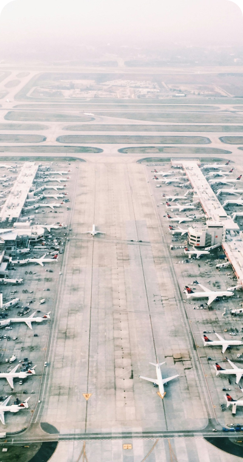

Home > 사업분야 > 건축사업
건축사업
Think of the people and nature
빌딩에서 도시까지
사람과 자연의 어우러짐
건축물 하나하나가 곧 예술작품이라는
건축 철학을 바탕으로 도시의 상징을 만듭니다.
공공/업무시설, 공항/판매/물류시설, 교육/연구시설
문화/의료시설, 교정/군사시설, 해외공사
Architecture as a Work of Art
포트폴리오 보기-
- Sunrise Plot V
- 189,269㎡
-
- Vietnam, Time Square
- 88,641㎡
-
- Al Makoum Internation Airport
- 66,000㎡
 -
- Abu Dhabi International airport
- 7,300㎡
첨단 기술력으로 건설해온
다양한 포트폴리오
금호건설은 초고층 분야 뿐만 아니라 공항, 의료시설, 비정형 건축물 및 첨단 생산 시설을 건설하는 엔지니어링 역량을 보유하고 있습니다.
동북아시아 최대의 승객 및 화물 허브인 인천 국제공항 IBC와 제주 국제공항, 물류와 무역의 중심지인 두바이 신공항, 중동의 최신 비정형 관제탑인 아부다비 관제탑, 호치민의 타임스퀘어, 판교 지식산업센터, 서울 도심 속 랜드마크이자 미래지향적 건축물의 아이콘으로 자리잡은 성수동 페코텍 사옥 등은 금호건설이 거둔 대표적인 성과물입니다.
이처럼 금호건설은 새로운 기술력과 가능성 탐구를 통해 미래를 향한 전진을 계속하고 있습니다.
건축사업 포트폴리오 보기-
- 아부다비 관제탑
- 중동 최신 비정형 관제탑
-

- 두바이 신공항
- 물류와 무역의 중심지
-

- 선라이즈 시티 플랏
- 베트남 최대 고급 주거단지